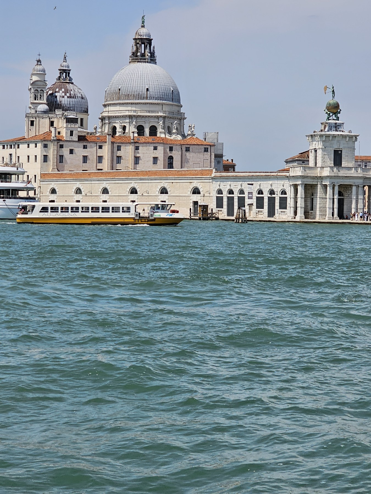
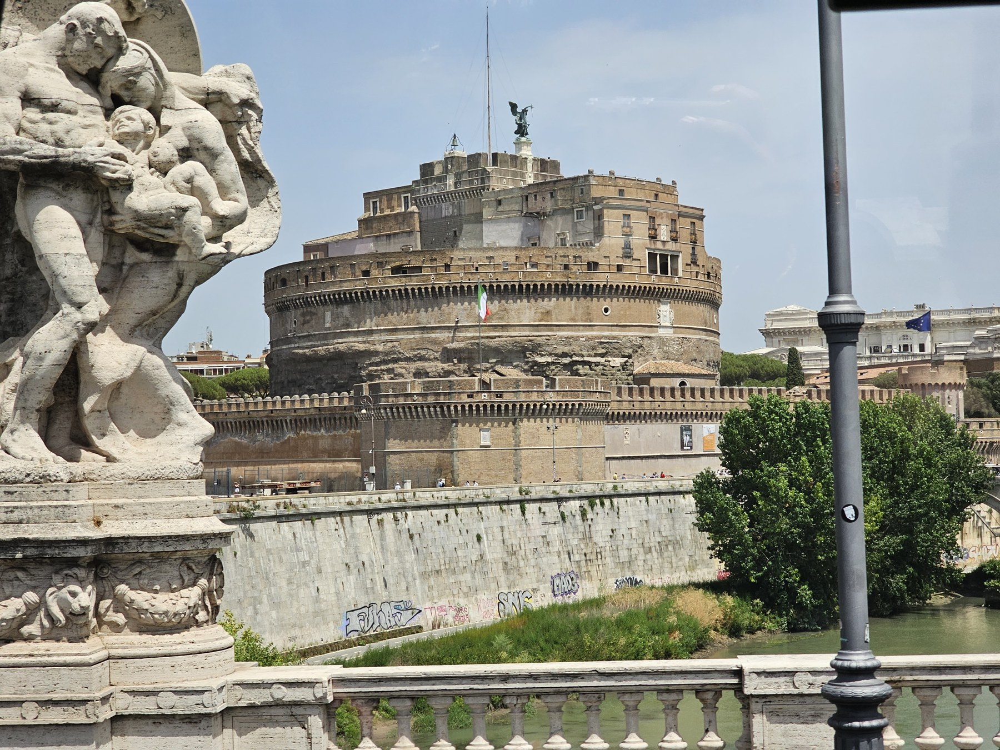

01 / 21 July · The beginning
Before Italy, an early morning at Heathrow
Our Italian holiday began well before the first landmark came into view. We were booked onto a morning British Airways flight from Heathrow to Milan Linate, with a 04:00 meeting time at Terminal 5. The photographs at the beginning of our album belong to that airport part of the journey: family pictures, a view across the airfield and the pause before flying.
We travelled as two adults and one child on Star Tours’ six-day Italy By Flight tour. A group tour gave the holiday its framework: the flights at either end, a succession of hotel bases and the journeys between them. Within that structure, the photographs tell a more personal story—where we stood, what came into view and the scenes that caught our attention.
On 21 July, BA564 was booked to leave Heathrow at 07:15 and arrive at Milan Linate at 10:15, local time. Our first night’s base was Four Points by Sheraton Padova. The journey had moved from the airport to northern Italy, and the next chapter would bring water into almost every frame.
02 / 22 July · Venice
A city coming into view across the water
Some places announce themselves through a skyline. In Venice, ours arrived across rippling green-blue water: domes, pale façades, terracotta roofs and towers rising beyond the boats.
Our album from 22 July includes waterfront views and family photographs on board a boat. The water is never just a background in these pictures. It fills the foreground, changes the reflections and places a little distance between the camera and the buildings. Venice became a city seen in layers: water first, then the waterfront, then the skyline beyond.

This is the kind of scene that gives Window Seat Journeys its name. The view is moving, the camera catches only a small part of it, and afterwards a single photograph brings the journey back.
03 / 22–24 July · Our Tuscan base
Two nights, and another change of scenery
From the night of 22 July, our base changed to Novotel Firenze Nord Aeroporto, in the Florence airport area. We stayed for two nights before continuing to Rome on 24 July.
These overnight stops gave the six days their rhythm: one night near Padova, two in the Florence area and two in Rome. The hotels were the connecting points between the more recognisable views in our album. They also remind me how much of a short touring holiday happens between its headline sights—arriving, unpacking just enough, then setting off again.
04 / 23 July · Pisa
When the postcard becomes a place
On 23 July, our photographs place us in Pisa. The familiar Leaning Tower appears beside the cathedral, while the rounded Baptistery fills another part of the view. Together, the buildings give the photograph much more to explore than the tower alone.
In our wide view, a dark streetlamp divides the bright sky, people cross the square and the pale stone stands against the green lawn. The tower’s tilt is there, unmistakable, but so is the ordinary movement of a busy summer visit.
That is what I like about keeping our own photographs alongside the famous names. A landmark might be recognisable before we arrive; the particular angle, light and people passing through the frame belong to the day we were there.
05 / 24 July onward · Rome
Stone, statues and the scale of Rome
By 24 July, our album had reached Rome. One photograph looks towards Castel Sant’Angelo, with sculpted figures in the foreground and the great round building beyond. After Venice’s open water and Pisa’s bright square, this part of the journey is full of stone, sculptural detail and monumental shapes.

The same day’s photographs also take us to St Peter’s Square in Vatican City. Curving rows of columns, the open square and the obelisk create a different sense of scale. Looking back through the album, those views sit naturally beside the Rome photographs while keeping Vatican City’s own identity.
For the final two nights, we stayed at Holiday Inn Rome – Eur Parco dei Medici. Rome was our last overnight base, closing a route that had begun with a flight into Milan six days earlier.
06 / 26 July · Homeward
Taking the small scenes home
Our return was booked for the evening of 26 July: British Airways BA555 from Rome Fiumicino to Heathrow, departing at 20:20 and arriving at 21:55 local time.
The holiday fits into six days on a confirmation document. In the album, it takes a different shape: Venice across the water, the buildings of Pisa together in one wide frame, and the stone figures and columns of Rome and Vatican City. The flights and hotel stops joined those scenes into a journey; the photographs are what let us return to it.
Our trip in motion
Watch the Italy journey
Alongside the photographs, these little films bring back the moving views: roads through a coach window, old-town streets and Venice from the water. The clips were filmed during our July 2023 holiday and edited with gentle original instrumental music.
Our travel notes
Flights and the five overnight stays
| Date | Journey or base | Details |
|---|---|---|
| 21 July 2023 | Heathrow → Milan Linate | British Airways BA564 · booked 07:15–10:15 |
| 21–22 July | Padova | Four Points by Sheraton Padova · 1 night |
| 22–24 July | Florence airport area | Novotel Firenze Nord Aeroporto · 2 nights |
| 24–26 July | Rome | Holiday Inn Rome – Eur Parco dei Medici · 2 nights |
| 26 July 2023 | Rome Fiumicino → Heathrow | British Airways BA555 · booked 20:20–21:55 |
We booked the tour for our family of three, with vegetarian meals requested. This account uses the July 2023 final confirmation, its hotel list and our trip photographs. Flight times are the booked historical local times.
Our album spans 20–26 July; the confirmed six-day tour began on 21 July. The current Star Tours tour page describes the product today. This story follows our 2023 records and the places shown in our photographs.
Keep exploring